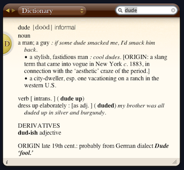

Sat, 28 Aug 2010 13:04:00 · awesome · dude · words · sartorial · fashion · gentlemen
The History of The Word 'Dude'
Having lived in China for a while, one bound to encounter daily quirkiness for sure. The other day, a Chinese friend of mine asked what the word ’Dude’ means, and why [some] Americans tend to use this word in such an alarming frequency. I failed to explain this topic perfectly in Chinese, but I’m going to try doing so in English :-p
According to the Oxford American Dictionary, a dude is simply a man. However, it seems like the word “dude” has evolved over time. In the 1800s, it referred to a dandy — a person obsessed with proper dress and deportment. The following century, the meaning began to change:

In the 20th century, “dude” evolved to take on a more neutral meaning. The term was adopted in the black community, then as now a prime spreader of new words and meanings. These were the local ‘dudes’, in their book, the word ‘Dude’ meaning not the fancy city slickers but simply ‘the boys’, ‘fellas’, the ‘cool people’.” In the sixties, the term attracted more coolness as it was embraced by surf culture, and by the seventies, a dude was just a guy.
^ Would you call this guy a dude?
Now, how should one describe the word dude to a non-American? And how’s that differ from, say, a Gentleman? In certain company, you wouldn’t want to 'mistakenly’ calling a gentlemen a 'dude’, now would you? So perhaps, these photos would help explain the answer.
^ How about this one? A dude or a gentleman?
^ Now, this is what we call a gentlemen, no? What he wear alone speaks the word, “I’m a Gentleman!”, not a dude.
~ Photos are courtesy from The Sartorialist.